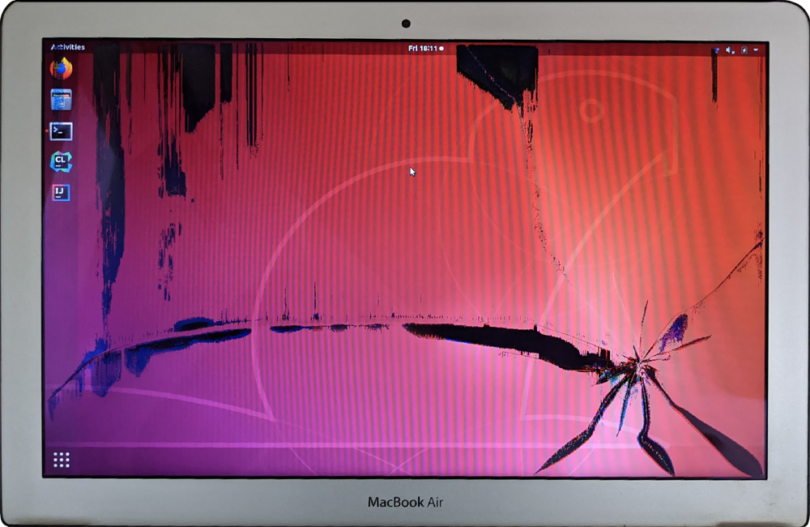
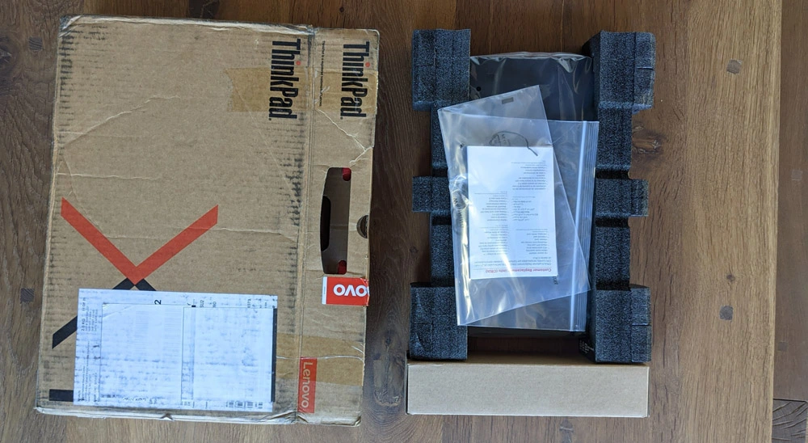
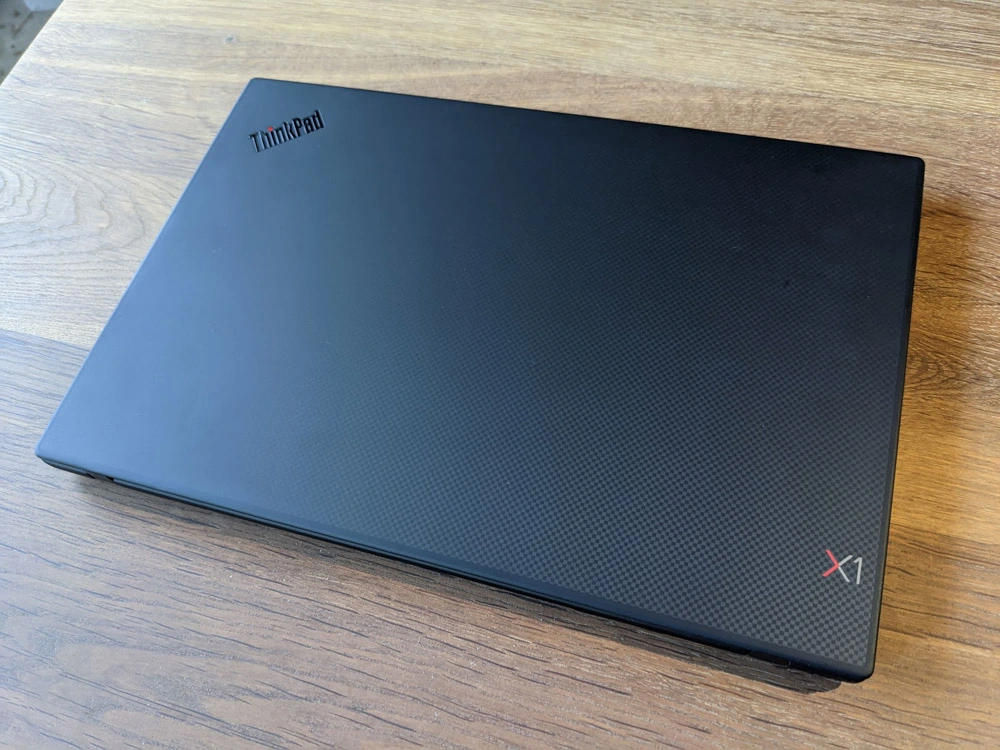
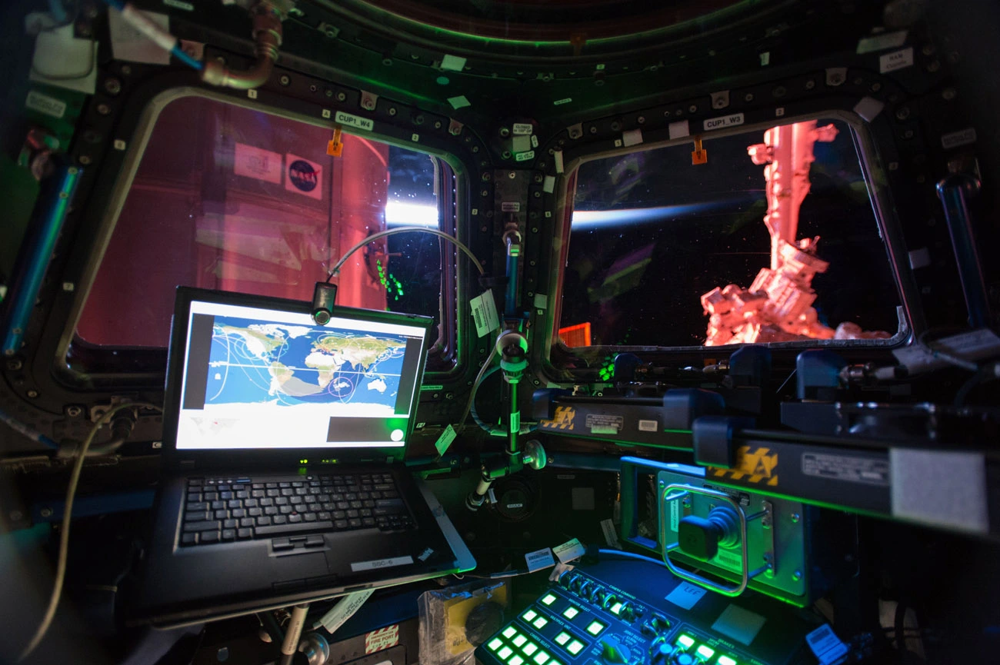
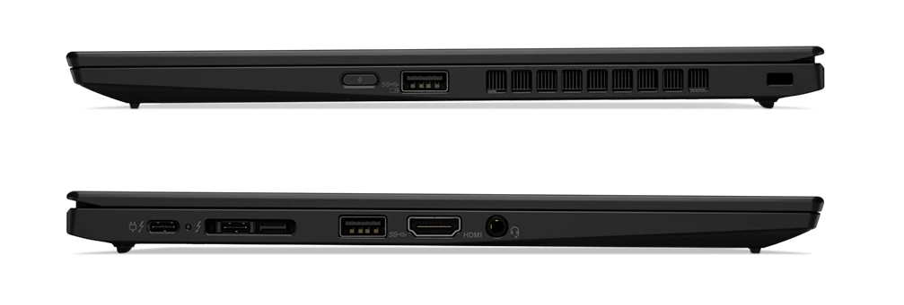
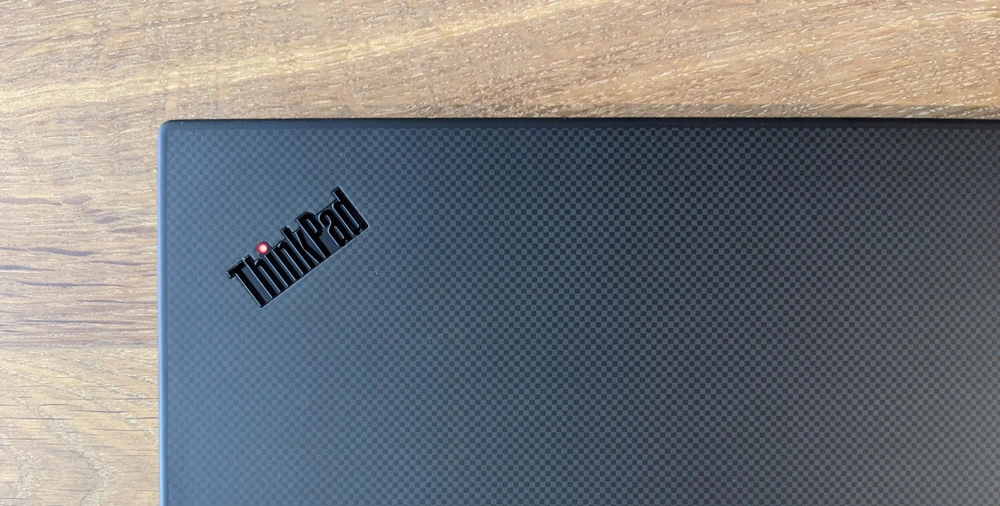
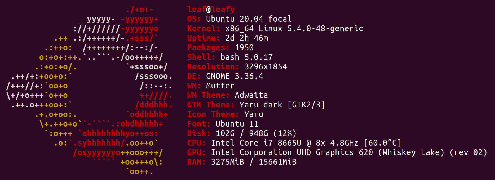
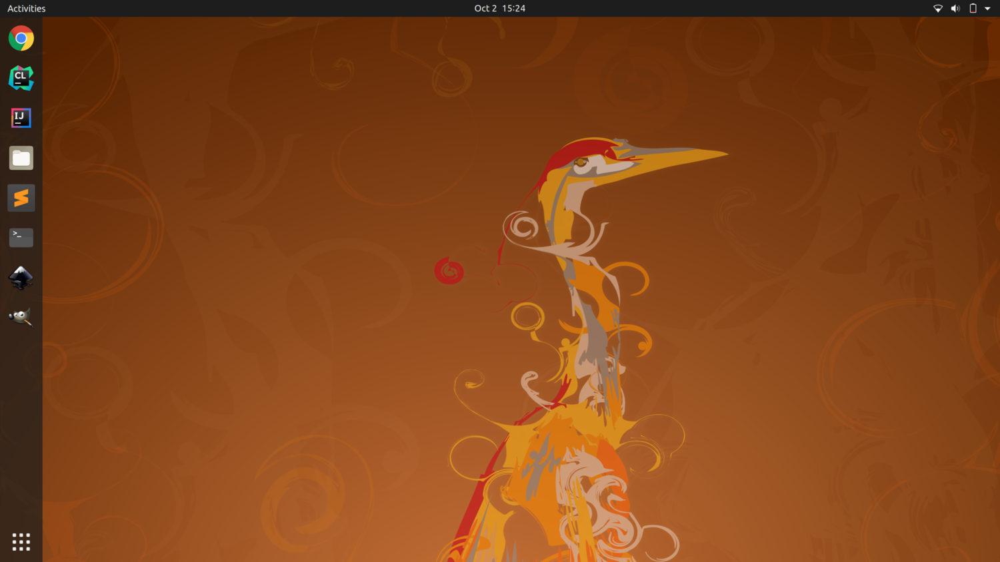

It happened within the blink of an eye. One second I had a pen in my hand and the next one it was falling in slow motion towards my faithful 2011 MacBook Air 13.3". The impact was far from spectacular. The damage sustained however, was quite extensive.

A scratched ego was manageable but a shattered screen much less so. It was especially problematic since it was only the latest addition to a growing list of problems that had progressively plagued our dynamic duo.
The battery could holds approximately 5% and you had to be real fast to plug back the MagSafe-T power cord if it popped. The 64GiB SSD, once ok, felt increasingly constricting with each "Software Update". Websites triggered all fans to run at full speed yet the chassis remained so hot I suspect it was red inside. Even Apple had dropped support in 2018 with MacOS X "High Sierra" being the last upgrade allowed on my beloved machine.
Despite all these problems, I had a hard time to let it go. I always found ways to carry on. Over the years, I have logged several thousand of hours on this laptop. I wrote two books and countless articles with it. I won't even get into how much I programmed.
Beyond the sentimental value, the MacBook Air embodies a revolution. It was the first time I got to experience the blazing speed of a SSD. Once I tasted instant program loading I couldn't go back[1].
And who could forget the announcement during MacWorld in January 2008? Whatever you think of Steve Jobs, you'll have to admit that, even though he did not pull a rabbit out of a hat, this laptop coming out of an envelope felt magical.
Trivia: That was not the first time Steve Jobs pulled the magic-trick trick. When introducing the Macintosh in 1984, he reached inside his blazer, to extract the floppy from his shirt. He floppy contained the program that made the Macintosh introduce itself[2].
Since no magic was going to fix my laptop, I researched how to replace the LCD, the battery, and the SSD. I was distraught to realize it was going to cost less to buy a new machine than to fix the old one.
Up to that point, getting a new laptop had always been a matter of choosing within the Apple catalog. Steve Jobs summarized well the state of things during MacWorld 2008.
Apple makes the best notebooks on the planet: The MacBook and the MacBook Pro. These are the standards in the industry by which competitive products are judged.
- Steve Jobs[3]
Having been around back then, I can agree with his assessment. Now twelve years later, "how much have MacBooks held up to their lead" was an interesting question to answer. The "Get a Mac" intro (of this same 2008 keynote I keep on mentioning) had a comical forecast.
- PC: 2008 is going to be the year of the PC!
- Mac: That's the right attitude! So what have you got planned?
- PC: I am just going to copy everything you did in 2007!
- "Get a Mac" ad[4]
As I investigated PC laptops on the market, I came across a few original designs and concepts which were far from simple copy-cats. One of them in particular, made by Lenovo, piqued my curiosity. So much in fact, that I ended up buying it. It was the 2019 ThinkPad Carbon X1 Gen7.
I placed an order on lenovo.com and I received a parcel a week later. The unboxing experience was under-whelming. Fifteen years of Apple products which first contact scream "We care so much that even the packaging is gorgeous" may have spoiled me.
Opening the cardboard revealed a laptop wrapped in a loose plastic bag and some foam to prevent it from moving around.

I was so surprised that for a second I wondered if had been delivered a refurbished machine. Inquiring with Lenovo's Customer Service about "a box" revealed they had no idea what I was talking about.
The initial disappointment was followed with rejoicing. In my hands, the X1 Carbon felt weightless. Lenovo got the "book" part of "notebook" right. In fact, according to the specs, a 2019 14" X1 is lighter (2.2 lbs/ 1.0 Kg) than a 2020 MacBook Air 13" (2.8 lbs / 1.29 Kg).
From a aesthetic perspective, I find the combination of red and black elegant. The carbon with weave on the top is also pretty cool. It is a beautiful looking machine even if it is a fingerprint magnet.

As a disclaimer, you should know that I am heavily biased when it comes to appreciating the visuals of a ThinkPad since their common color scheme never fails to bring up warm memories of the International Space Station.

The X1 features two USB Type-A ports and one HDMI output. The one connector that really mattered to me was the Thunderbolt-3 found on the left side. It allows me to connect all my battlestation peripherals (32" LCD, webcam, microphone, magic magic trackpad, and Ergodox) to a CalDigit TS3 Plus Dock and swap between my personal ThinkPad and the MacBook Pro issued by work. It worked like a charm.

There is a second Thunderbolt-3 port, unfortunately also located on the left side which forces weird cable management if the power outlet is on the wrong side.
 Trivia: Checking the 2020 MacBook Air reveals that even Apple's ultra-portable does not have both side covered with Thunderbolt-3. I feel like Lenovo missed an opportunity to one-them-up here.
I had the pleasure to use an IBM ThinkPad T-42 around 2005 back when I was working for Rogers in Canada. Typing on these was dreamy and I hoped Lenovo had managed to maintain the same quality.
I was not disappointed. Typing with a Lenovo ThinkPad feels GREAT. Without a doubt the best keyboard laptop around. I love the tactile feedback and travel distance provided by the elevated keys. The Fn and Ctrl keys location felt uneasy but thankfully there is a BIOS setting allowing to change that.
The laptop came pre-installed with Windows 10 Pro. I dug myself into an unpleasant experience when I refused to create an account during setup and clicked on "Offline Account". Instead of having to click on "Skip" to go past an unwanted Microsoft Cloud setup, I was forced to click on a button passive aggressively labeled "Limited Experience".
After the setup completed, both the File Explorer and the Task bar were littered with more "suggestions" to connect with Microsoft Cloud and to accept Edge as my Lord and Savior.
Feeling uneasy with a screen that looked like a billboard, I decided to go for an OS that would appreciate me for who I was without trying to change me. I wiped the hard-drive and installed Ubuntu 20.04.

Trivia: It seems going back does not even require you to write down the key. It remains in the ROM somewhere and Microsoft can auto-detect it upon install.
Running Linux used to be a challenge. I can still remember my brother in the early 2000s spending a week on forums to get his Debian to successfully "startx" a GUI via XServer. Configuring the network meant getting into ifconfig and setting up your own IP sub-network mask.
The one distro that brought Linux to an usable level and solved it (almost) all was Ubuntu. To this day this is always the distro I go for.
Ubuntu gets better every year but there are still unexpected areas of friction. As a fan of Sublime Text 3, I could not find it on "Ubuntu Software". After downloading it manually I struggled to get it to stick in the dock. I had to manually edit a non-trivial .desktop file[5]. An even after I got that to work, I could not figure out a way to "Open With...". I still have to open the editor and drag/drop from Files.
My last attempt at HiDPI on Ubuntu 18.04 had resulted in a fiasco. Enabling the essential "fractional scaling" required to manually edit /etc/X11/xorg.conf and other arcane things. I gave up and went to cook crepes.
This time, the Nutella jar remained on the shelf. Things have improved a lot. Fractional Scaling now comes enabled out-of-the-box. HiDPI is well handled with crisp 128x128 icons in the Desktop and most apps auto-detecting how to render themselves well. Even switching to the 32" LCD via the TS3+ Dock worked well with scaling properly memorized.
There was some weirdness on the way. Like GIMP, unexplicably small brush icons where the rest of the GUI is flawless. Or when I noticed tearing and it turned out that the refresh rate had somehow lowered to 30Hz. The Setting app did not even offer 60Hz anymore so I had to reset it manually from the command-line.
$ xrandr --output DP-1 --rate 60
Not really a problem but I also found some resolutions with rather capricious refresh rates. Like "I can do 3200x1800" but I won't do 60Hz. What about 59.96Hz?"
$ xrandr Screen 0: eDP-1 connected primary 3840x2160 3840x2160 60.00*+ 59.98 59.97 48.00 3200x1800 59.96 59.94 2880x1620 59.96 59.97 2560x1600 59.99 59.97 2560x1440 59.99 59.99 59.96 59.95 2048x1536 60.00 1920x1440 60.00 1856x1392 60.01 1792x1344 60.01 ...
Overall, the amount of tweaks was anecdotal and the display was a 500-nits pleasure.

I have never seen good speakers on a laptop and the Carbon X1 won't change that. How can I describe the sound it makes? Let's say you are listening to music with your ear-covering headphones. You take them off and put it down on the table. You can still hear the music a little right? That is how the Carbon X1 sounds.
I don't think it is even fair to expect speakers to sound good since it is a physically impossible problem to solve. They are here to allow a bad VC and not much more.
The crucial question about a computer used to be "But can it run DOOM?". Later it became "But can it run Crysis?". These day it is "But can it run nytimes.com?". To which I am happy to report I was able to browse newspaper websites without burning myself.
More than a browser, the Carbon X1 is a damn good laptop. Unless one needs a specific software that runs only on a Mac, I don't see this machine hindering creativity. After using it for a week to program and write I felt happy with my purchase.
What about that statement from 2008? Are Apple laptops still the best in the world? If you can tolerate Windows I would say that a Carbon X1 has nothing to envy to a MacBook Air. Especially now that WSL and the upcoming WSL2 give you almost all the power of Linux with Windows GUI.
If you fancy Linux there is still room for improvement but going non-Apple may be the only way. With security chips like the T2, it has become increasingly difficult for drivers developers to keep up. To this day, one year after its release, the MacBook 16" doesn't have WiFi drivers.
The advantage Apple still holds over its competitors is its willingness to break backward compatibility. They are willing to pay that cost in order to facilitate innovation. Brett Bilbrey, an ex-Apple employee, has a good story to illustrate that mindset.
When my team was creating AppleTV, I asked Steve why we were not supporting NTSC composite signals. Steve looked at me and asked, “Do you LIKE watching composite video?”.
Composite video was the old analog video format that encoded luminance and chrominance using a 3.58Mhz phase encoded signal to determine the color. There were many artifacts associated with NTSC composite signals [...].
I asked why we were not supporting NTSC composite because that was ‘the’ standard at the time, and just about every TV set supported that input. But Steve’s question made me realize that being ‘compatible’ with as many sets as possible was not our goal.
Our goal was to create a device that would display our content on TVs in the highest quality possible.
- Brett Bilbrey, quora.com[6]
Whether one will go with legacy-friendly-top-quality or embrace over-the-top-quality-at-a-cost will depend on their taste and needs. But what a lovely time to be alive and be able to choose :) !
| ^ | [1] | Developers promptly fixed the glitch by adding features and we were back to having HDD speed with SSD hardware in no time. |
| ^ | [2] | Steve Jobs Introduces the Macintosh (January 24, 1984) |
| ^ | [3] | Keynote, MacWorld 2008 |
| ^ | [4] | Keynote, MacWorld 2008 |
| ^ | [5] | Sublime Text 3 Ubuntu Sidebar Icon Launcher |
| ^ | [6] | How did Steve Jobs thrive in a technical field with a non-technical background? |